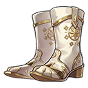

추천 광추
이상이 불타는 지옥
치확 +16% · 스킬마다 공격력 +10%
효과 자세히
스킬로 최대 4스택. 전투 진입 시 파티 SP 최대치 6pt 이상이면 공격력 +40% 추가. 아처 승급 2단계 최대 SP +2pt로 발동 조건 충족.
거짓말의 종막
치확 +18% · 적 받는 피해 +20%
효과 자세히
전투 시작·추가 공격 누적 4회마다 그림자 포식 3턴 → 공격력 +40%·취약. 3턴 동안 추가 공격 4회 주기를 확인.
별바다 순항
치확 +16% · 처치 시 공격력 +40%
효과 자세히
적 HP 50% 이하 → 추가 치확 +16%. 적 처치 시 공격력 증가 2턴.
그 종착지에서 다시 만나자
치피 +40% · 스킬과 추가 공격 +40%
효과 자세히
전투 스킬과 추가 공격 피해에 적용.
순수 사유의 세례
치피 +20% · 디버프당 치피 +8%
효과 자세히
디버프 최대 3개. 필살기 적중 → 피해 +36%·추가 공격 방어력 무시 24% 2턴.
추천 유물
별을 갈망하는 항법사 아집 4 · 텐고쿠@라이브스트리밍 2
- 머리
 주옵션HP부옵션치명타 확률 · 치명타 피해 · 공격력% · 속도
주옵션HP부옵션치명타 확률 · 치명타 피해 · 공격력% · 속도 - 손
 주옵션공격력부옵션치명타 확률 · 치명타 피해 · 공격력% · 속도
주옵션공격력부옵션치명타 확률 · 치명타 피해 · 공격력% · 속도 - 몸통
 주옵션치명타 확률 / 치명타 피해부옵션치명타 확률 (주옵션 제외) · 치명타 피해 (주옵션 제외) · 공격력% · 속도
주옵션치명타 확률 / 치명타 피해부옵션치명타 확률 (주옵션 제외) · 치명타 피해 (주옵션 제외) · 공격력% · 속도 - 다리

주옵션공격력%부옵션치명타 확률 · 치명타 피해 · 속도 - 구체
 주옵션양자 속성 피해 / 공격력%부옵션치명타 확률 · 치명타 피해 · 공격력% (주옵션 제외) · 속도
주옵션양자 속성 피해 / 공격력%부옵션치명타 확률 · 치명타 피해 · 공격력% (주옵션 제외) · 속도 - 매듭
 주옵션공격력%부옵션치명타 확률 · 치명타 피해 · 속도
주옵션공격력%부옵션치명타 확률 · 치명타 피해 · 속도
이 조합을 추천하는 이유
항법사 스킬마다 스킬·필살기 피해 +18%, 최대 3스택. 텐고쿠 같은 턴 SP 3pt 소모 → 추가 치피 +32%.
별처럼 빛나는 천재 4 · 뭇별 경기장 2
- 머리
 주옵션HP부옵션치명타 확률 · 치명타 피해 · 공격력% · 속도
주옵션HP부옵션치명타 확률 · 치명타 피해 · 공격력% · 속도 - 손
 주옵션공격력부옵션치명타 확률 · 치명타 피해 · 공격력% · 속도
주옵션공격력부옵션치명타 확률 · 치명타 피해 · 공격력% · 속도 - 몸통
 주옵션치명타 확률 / 치명타 피해부옵션치명타 확률 (주옵션 제외) · 치명타 피해 (주옵션 제외) · 공격력% · 속도
주옵션치명타 확률 / 치명타 피해부옵션치명타 확률 (주옵션 제외) · 치명타 피해 (주옵션 제외) · 공격력% · 속도 - 다리
 주옵션공격력%부옵션치명타 확률 · 치명타 피해 · 속도
주옵션공격력%부옵션치명타 확률 · 치명타 피해 · 속도 - 구체
 주옵션양자 속성 피해 / 공격력%부옵션치명타 확률 · 치명타 피해 · 공격력% (주옵션 제외) · 속도
주옵션양자 속성 피해 / 공격력%부옵션치명타 확률 · 치명타 피해 · 공격력% (주옵션 제외) · 속도 - 매듭
 주옵션공격력%부옵션치명타 확률 · 치명타 피해 · 속도
주옵션공격력%부옵션치명타 확률 · 치명타 피해 · 속도
이 조합을 추천하는 이유
천재 양자 약점에서 방어력 무시 20%. 뭇별 치확 70%에서 전투 스킬 피해 +20%.
별을 갈망하는 항법사 아집 4 · 텐고쿠@라이브스트리밍 2
- 머리
주옵션HP부옵션속도 · 치명타 확률 · 치명타 피해 · 공격력%
- 손
주옵션공격력부옵션속도 · 치명타 확률 · 치명타 피해 · 공격력%
- 몸통
주옵션치명타 확률 / 치명타 피해부옵션속도 · 치명타 확률 (주옵션 제외) · 치명타 피해 (주옵션 제외) · 공격력%
- 다리 주옵션속도부옵션치명타 확률 · 치명타 피해 · 공격력%
- 구체
주옵션양자 속성 피해 / 공격력%부옵션속도 · 치명타 확률 · 치명타 피해 · 공격력% (주옵션 제외)
- 매듭
주옵션공격력%부옵션속도 · 치명타 확률 · 치명타 피해
이 조합을 추천하는 이유
아처가 선데이 바로 앞에서 먼저 행동하고 전투 스킬로 다시 행동하는 순서를 맞춥니다.
이 정도면 잘 키웠다
선택한 세팅 기준 · —는 확인된 수치 없음
- 종결 명함·전광
- 스파클 편성
스파클의 스킬 포인트 지원으로 연속 전투 스킬을 사용합니다.
| 스탯 | 추천 스탯 | 준종결 | 종결 |
|---|---|---|---|
| 공격력 | 3000 | — | 3000 |
| 속도 | 기본 속도 | — | — |
| 치명타 확률 | 100%[1]스파클 전용 광추의 치명타 확률 10%p를 편성에서 참고. | — | 100% |
| 치명타 피해 | 100% | — | 200% |
세팅 기준·출처
종결은 명함·전용 광추·항법사 또는 천재·텐고쿠 조건의 시트 수치입니다. 공개 가이드에서 이 세팅의 준종결 수치를 확인하지 못했습니다.
스탯 조건과 각주
- 치명타 확률 · 추천 스탯 스파클 전용 광추의 치명타 확률 10%p를 편성에서 참고. ↑
- 치확 파티 버프 적용 후
양자 약점 적을 상대로 방어력을 무시합니다.
| 스탯 | 추천 스탯 | 준종결 | 종결 |
|---|---|---|---|
| 공격력 | 3000 | — | — |
| 속도 | 기본 속도 | — | — |
| 치명타 확률 | 100%[1]파티 버프 적용 후 권장. | — | — |
| 치명타 피해 | 100% | — | — |
세팅 기준·출처
공개 가이드에서 이 세팅의 준종결 또는 종결 수치를 확인하지 못했습니다.
스탯 조건과 각주
- 치명타 확률 · 추천 스탯 파티 버프 적용 후 권장. ↑
성혼과 추천 돌파
1돌 스킬 3회 후 SP 2pt 반환 · 2돌 필살기 약점 부여와 저항 감소.
1한 턴에 전투 스킬 3회 → SP +2pt추천
닿지 못한 이상
2필살기 → 양자 약점·저항 −20%추천
필살기 대상에게 2턴.
3전투 스킬 +2 · 일반 공격 +1
스킬·일반 공격 레벨 상한 각각 15·10.
4필살기 피해 +150%
영웅이라 불릴 수 없는 삶
5필살기·특성 +2
필살기·특성 레벨 상한 각각 15.
6턴 시작 SP +1 · 스킬 방어력 무시 20%
전투 스킬 자체 피해 증가 최대 중첩 +1.
추천 파티


기본 운영과 행적
스킬 포인트를 모으고 연속 사격
서포터 일반 공격·스파클 필살기로 포인트 수급 → 아처 전투 스킬 연속 사용.
- 아처 필살기 → 충전 +2pt. 이후 동료 공격마다 충전 1pt를 써서 추가 공격하고 SP 1pt 회복.
행적 육성 순서
전투 스킬 → 필살기 → 특성 → 일반 공격
아하 속도 계산기 →